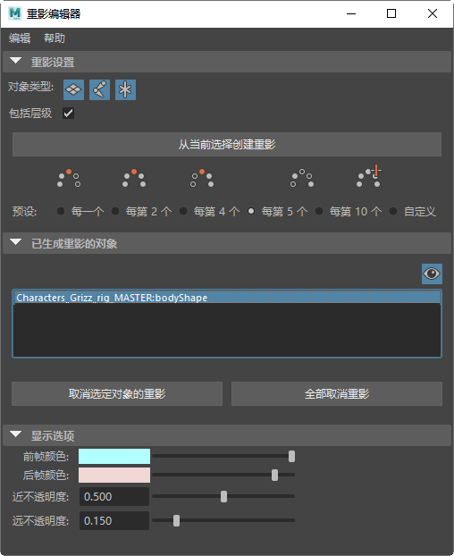
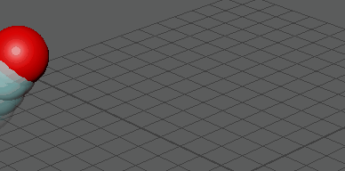
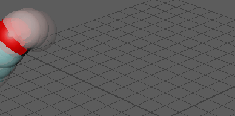
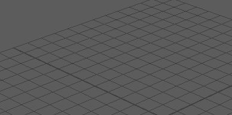
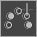
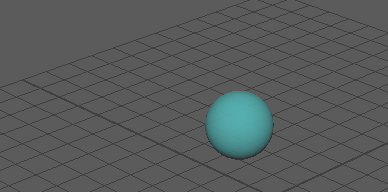
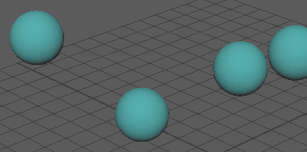
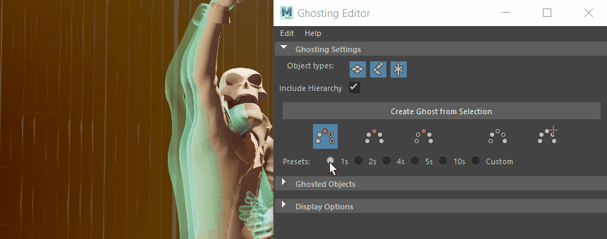

- 在“动画”(Animation)菜单集 (F4) 中：

使用“重影编辑器”(Ghosting Editor)，可以创建回显动画的图像，从而能够可视化已设置动画的对象随时间的移动和位置变化。与表示围绕动画模型的关键帧的运动轨迹不同，动画重影显示的是对象而不是轨迹，从而让您可以对动画做出更好的决策。
本主题介绍了“重影编辑器”(Ghosting Editor)中的设置。若要在场景中创建重影，请参见为对象生成重影和使用“重影编辑器”(Ghosting Editor)修改场景重影。
注： 应避免将“重影编辑器”(Ghosting Editor)与“时间编辑器”(Time Editor)和“动画层重影”(Animation Layer Ghosts)组合使用，因为目前这会出现不可预测的结果。
重影设置
使用这些过滤器可以允许或禁止在重影中显示特定组件。
注： 此过滤器在创建重影之前应用，会影响任何后续创建的重影。即，如果您在创建重影后调整过滤器，那么它对现有重影没有影响，但将应用于接下来创建的所有重影。
| 对象类型 | 行为 |
|---|---|
| 禁用此设置后，将不为几何体生成重影。默认情况下启用该设置。 | |
| 禁用此设置后，将不为关节生成重影。默认情况下启用该设置。 | |

|
禁用此设置后，将不为定位器生成重影。默认情况下启用该设置。 |
- 包括层级
- 启用此选项以从选定对象的层级中的任何 DAG 层级子孙对象创建重影。例如，如果选择顶级节点（如角色绑定），则也会为该组中包含的所有几何体和关节生成重影。
- 从当前选择创建重影
- 在场景中选择组件后，单击“从当前选择创建重影”(Create Ghost from Selection)以对其应用重影。
- 重影模式
- 单击图标可设置重影效果在场景中的显示方式。
-
- 前方重影
-

- 将重影应用于动画的当前帧之前的帧。
- 使用“帧步长”(Frame Step)字段可设置重影间距。有关更多详细信息，请参见“帧步长”(Frame Step)。
- 前方重影和后方重影
-

- 将重影应用于动画的当前帧之前和之后的帧。
- 后方重影
-

- 将重影应用于动画的当前帧之后的帧。
-  为自定义帧生成重影
-

- 将重影应用于动画的特定帧。
- 单击此图标后，“帧步长”(Frame Step)字段将替换为“自定义帧”(Custom Frames)字段，您可以在此字段中输入要显示重影的帧编号。
- 如果要添加视口中当前显示的帧，请单击“添加当前帧”(Add Current Frame)。
- 为关键帧生成重影
-

- 将重影应用于动画的每个关键帧。
- 单击此图标可将“帧步长”(Frame Step)字段替换为“使用重影驱动者”(Use Ghost Driver)选项。
- 选择“使用重影驱动者”(Use Ghost Driver)，以使用“节点编辑器”(Node Editor)中选定对象的关键帧来驱动其他选定对象的重影。
-
在“节点编辑器”(Node Editor)中设置重影驱动者
使用以下 MEL 命令：connectAttr <driver>.msg <ghost>.ghostDriver
（其中 <driver> 是要驱动重影的对象。）
- 预设
-

- 使用重影“预设”(Presets)，可以选择重影的显示间隔。
- 从预设间隔中选择重影间距，例如，按每一帧 (1)、每两帧 (2) 等，或通过在“自定义”(Custom)字段（其中包括“帧步数”(Frame Steps)、“前方重影”(Ghosts Before)和“后方重影”(Ghosts After)的滑块）中输入不同的数量设置其他距离。“预设”(Presets)选项仅在“前方重影”(Ghosts Before)、“前方重影和后方重影”(Ghosts Before & After)和“后方重影”(Ghosts After)模式下可用。
重影对象(Ghosted Objects)
此部分显示场景中为其生成重影的对象及关联选项。
 显示/隐藏重影(Ghost Show/Hide)
显示/隐藏重影(Ghost Show/Hide)
- 启用或禁用场景中重影的可见性。
- “重影对象”(Ghosted Objects)列表
- 显示场景中的所有重影对象。
- 取消选定对象的重影
- 从“已生成重影的对象”(Ghosted Objects)列表中移除选定对象（在视口或“大纲视图”(Outliner)中）。
- 全部取消重影(Unghost All)
- 从场景以及“已生成重影的对象”(Ghosted Objects)列表中移除所有重影。
显示选项(Display options)
此部分用于调整重影在视口中的绘制方式。
- 前帧颜色(Pre Frame Color)/后帧颜色(Post Frame Color)
- 为当前帧前后的重影设置自定义颜色。
- 近不透明度(Near Opacity)/远不透明度(Far Opacity)
- 调整距当前时间最近或最远的重影的最小不透明度。
- 此设置用作渐变：近不透明度表示与当前时间最近的重影的不透明度，不透明度通常最高。远不透明度是与当前帧很远的重影的不透明度，不透明度通常最低。
- 不透明度设置基于重影的这两个值之间的范围进行调整。